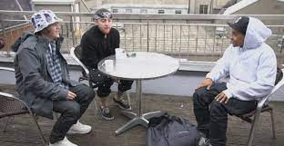

Las colaboraciones más importantesde Mac

"All around the word" Primera colaboracion con el artista Boaz.

"My Favorite part" Es la colaboracion más trasendental que tuvo con la artista Ariana Grande.

"The Question" se llamo la colaboracion que tuvo mac Miller con el artista Lil Wayne.

"Fight the feeling" fue la ultima colaboracion que tubo con el artista Kendrick Lamar.

"Dang" fue la colaboracion que tubo con el artista Kendrick Lamar.

"Coming Back" fue la colaboracion que tubo Mac con el artista Domo Genesis.